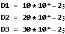
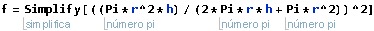
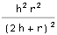
Se Ar = r/h
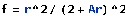
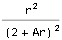
In[222]:=
Posteriormente é só desenvolver p/ chegar na expressão abaixo .
Questão 7.1
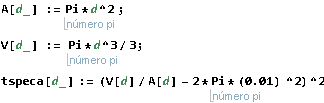
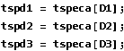
Eu resolvi essa parte na mão e o professor Zoqui tbm fez em aula . Fiz o Volume sobre área do massalote e isolei os termos, chegando na seguinte equação:
Seja Ar, o número de Arruda (sim, eu inventei isso agora, em homenagem ao Prof. Celso Arruda) uma constante adimensional r/h que define a proporção entre raio e altura do massalote cilíndrico:
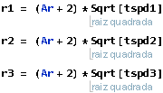
A vantagem de usar o número de Arruda é que ele já elimina a possível solução negativa da matemática . Vamos calcular as alturas:
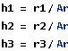
Questão 7.2
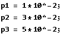
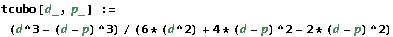
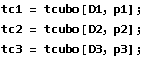
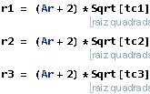
Questão 8 e 9
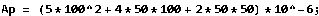
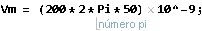
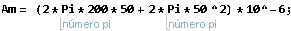
A razão entre o tempo de resfriamento da peça e o do massalote tem que ser pequena, visto que o massalote deve ter o tempo de resfriamento maior que o da peça.
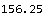
Desta forma, a peça vai ter muitos defeitos, uma vez que resfria antes do massalote.
Quanto a questão 9: Note que isso não depende do material, porque nosso C, sim, varia com material, porém ele “desaparece” na nossa fórmula. Sendo nossas contas, então, independente de C, temos que também para o alumínio teremos defeitos.